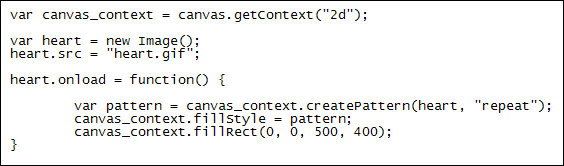
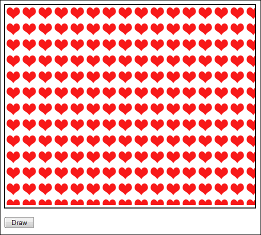
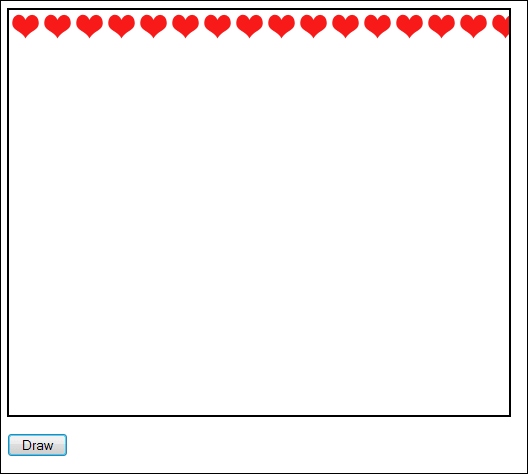

Pattern Fill Styles for your HTM5 Canvas Shapes
Ongoing HTML5 Canvas Tutorial: 1 2 3 4 5 6 7 8 9 10 11 12 13 14 15
You can turn images into patterns that you can then use for a fill style. To create a pattern, you use the method createPattern:
createPattern( image, pattern_type )
Between the round brackets of the method you need two thing separated by a comma: an image to use for your pattern, and a pattern type. The pattern type can be one of four values: repeat, repeat-x, repeat-y, no-repeat. A value of repeat mean "fill the space with the pattern"; a value of repeat-x means "fill across the page once, from left to right"; a value of repeat-y means "fill down from top to bottom, once only"; a value of no-repeat Is pretty self-explanatory.
The image can be created from a new image object, or can be a reference to one already in the BODY of your HTML (the image can also reside on another domain).
Study the code below to see how createPattern works.

After we get a 2D canvas context, a new image object is created:
var heart = new Image();
heart.src = "heart.gif";
You saw how to create images like this in a previous section. The image we're using is in the GIF format, and is called heart. We're assigning this to the src property of the image object we created.
The next line is this:
heart.onload = function() {
Image objects also have an onload event you can use. This will delay execution of the code until any images have loaded. To the right of the equal sign we have
= function() {
We're using a function expression here (or anonymous function). A function expression goes on the right of the equal sign. It doesn't need a name (but can have one), just the word function followed by round brackets. Function expression are useful when you only want to execute a piece of code once and you're not going to be calling it again from elsewhere.
In between the curly brackets of the function, we have this:
var pattern = canvas_context.createPattern( heart, "repeat"
);
canvas_context.fillStyle = pattern;
canvas_context.fillRect(0, 0, 500, 400);
We use the createPattern method with our heart image and a value of repeat. This is then assigned to a variable called pattern. The pattern is then handed to the fillStyle method. The final line fills a rectangle with a width of 500 and a height of 400. The starting position for the fill is the top left of the canvas ( 0, 0 ).
The result of the code is this:

If we change the pattern style to repeat-x we get this instead:

In the next part, you'll see how to draw images on a HTML5 canvas, how to scale
images, and how to slice them.